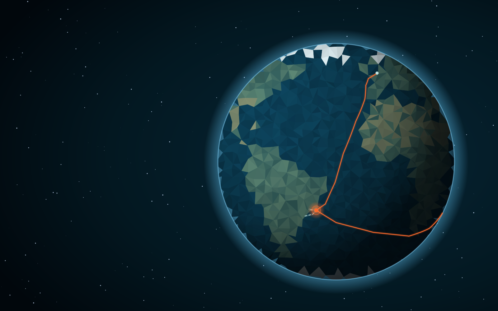

Vista do espaçoVellarys Logística Internacional
O mundo inteiro cabe na sua carga
Do Espírito Santo para a Europa, a Ásia e o interior do Brasil. Mar, ar e estrada coordenados por uma só equipe, a partir dos portos de Vitória, Tubarão e Praia Mole.